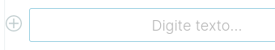

Guia para criar uma notícia
Contents
Guia para criar uma notícia#
Este é o guia de como criar uma notícia no portal extranet da 1 da 2 para extranet usando Volto, o frontend do Plone 6.
Criação de notícia#
O primeiro passo para criar uma notícia é clicar no botão de adicionar conteúdo.
Um menu irá aparecer, escolher a opção de menu Notícia.
Uma nova página de notícia vazia é criada.
{kind=link}
Um bloco de texto destacado serve para você editar o título da notícia.
{kind=link}
Ao lado direito temos o formulário de configuração da notícia onde devemos completar as informações da notícia.
{kind=link}
Um dos campos disponíveis para configuração de notícias são os direitos autorais.
{kind=link}
Outra informação importante são as tags que pode também ser configuradas no formulário de configuração da notícia.
{kind=link}
As tags são exibidas no final da página da notícia.
{kind=link}
A seguir você pode inserir uma imagem na notícia, clique no botão + no bloco vazio abaixo do título, se necessário adicione um bloco vazio primeiro.

Clique no ícone + para escolher um bloco para adicionar. Então clique no botão bloco de imagem para adicionar um bloco de imagem.
Por padrão o bloco vem sem imagem e com um campo que permite selecionar ou enviar uma imagem.

Clique no botão para envio de imagem.

Então na janela de upload de arquivo de imagem escolha a imagem desejada.
{kind=link}
Após o envio a imagem é exibida e também o painel com as configurações da imagem. Preencha os campos de acordo com a necessidade.
{kind=link}
Outra forma de adicionar imagem é colando o texto copiado de outra página que contenha uma imagem. A imagem é exibida com as configurações padrão.
{kind=link}
Vamos realinhar a imagem, para começar vamos alinhar a imagem a direita. Clique no botão de alinhamento a direita que fica no painel de configuração.
{kind=link}
Em seguida clique no botão de tamanho médio no painel de configuração.
{kind=link}
Para finalizar mova a imagem para a posição adequada usando o botão de mover bloco de imagem.
{kind=link}
Por fim, clique no botão salvar.
{kind=link}